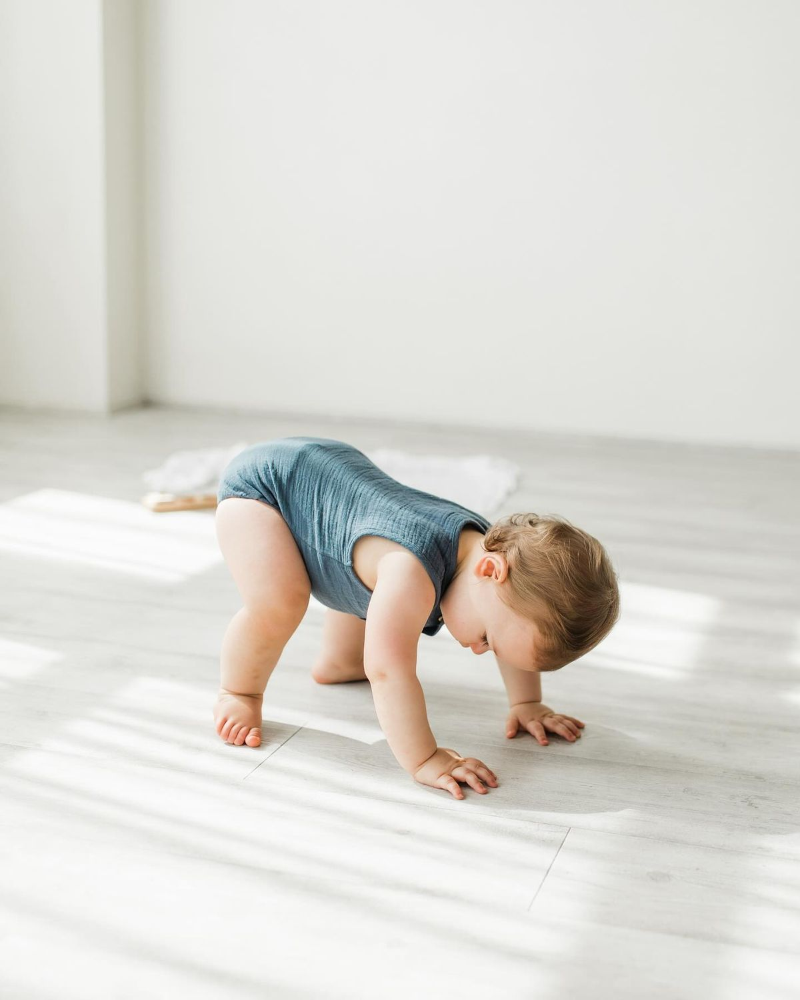
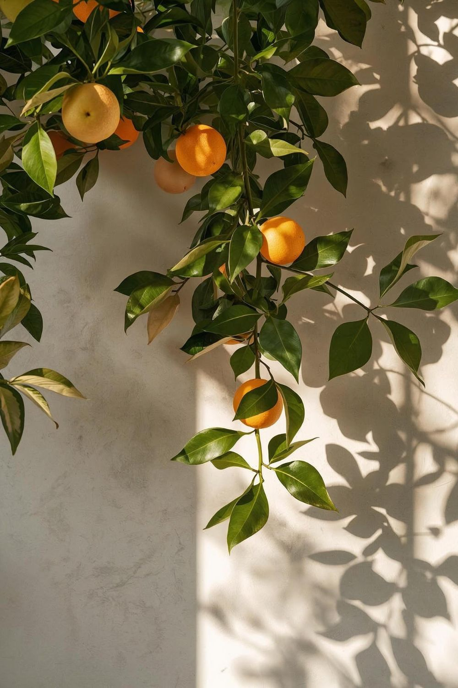
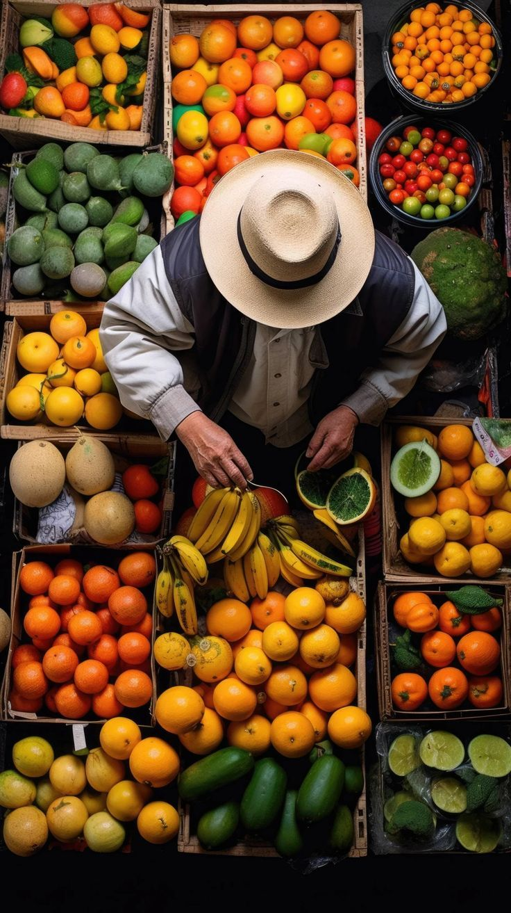

Prasmė yra jausmas, kuris ateina per tikėjimą bei įsitvirtina per santykius ir darbą. Dažniau šį jausmą galima patirti nuo saulės rezginio taško kylantį ir besiplečiantį krūtinės srityje. Jausmas kūne gali migruoti, bet visada turės centrą (pas kiekvieną žmogų skirtingą).
Kai žinau, kad yra bent vienas žmogus, kuris mane myli; jaučiu palaikymą iš viršaus; turiu darbą, kuris padeda jaustis dalimi šio pasaulio; pamiegu ir pavalgau – patenkintos visos keturios vidinės instancijos: protas, širdis, siela ir kūnas.
Kai kuriems iš mūsų sunkiau patikėti, kad yra kažkas stipresnio ir išmintingesnio nei žmogus. Kai kuriems kliba susirasti darbą. Kartais laiku nepavalgome, pakankamai nepamiegame. Kartais nepavyksta kurti santykių išlaikant pagarbą. Atsitinka ir tokių situacijų ar periodų, kai griūna viskas kartu. Nori nenori, reikia keltis.

Širdis
Pradžiai, įdėmiai stebint, ar reaguoja širdis, siūlyčiau susirasti ir užsikabinti už noro. Norą, kylantį iš širdies, lydi įkvėpimo pojūtis. Jei pasiekti širdies nepavyksta – pakanka idėjos, kuri perspektyvoje turi potencialą pakelti gyvenimo kokybę. Įsivaizduojant, kad idėja jau realizavosi, reikėtų atsiklausti savęs, kaip tame jaučiuosi: jei bent kužda įkvėpimas – tinka. Jei jausmas neateina – reiktų keisti idėją.
Protas
Iš atrasto noro ar idėjos reikia nustatyti pirmus žingsnius ir esminius tikslus, kurie būtų aiškus protui. Svarbu, kad būtų matomi tarpiniai rezultatai, o galutinis – pagrįstas skaičiais. Jei, pavyzdžiui, noriu parašyti knygą, visų pirma nusistatysiu, apie ką knyga, kam skirta, kokias plėtosiu temas. Tarpinius rezultatus stebėsiu per parašytų temų ar puslapių skaičių.
Siela
Įkvėpimas kyla iš vidinio gyvybės šaltinio, tiesiogiai susijusio su siela. Priimant jį kaip dovaną ir naudojant kaip įrankį, įmanoma pasiekti ir tikėjimą. Per tikėjimą auga siela. Išnyksta dvasinis alkis, atsiranda aiškumas. Kūnas lengviau jaučiasi ir greičiau atsistato, nuosekliau veikia vidinės organizmo funkcijos. Būnant tikėjimo ir įkvėpimo kombinacijoje, viduje pasijaučia maloni gyvybė: gali, pavyzdžiui, aktyviai burbuliuoti pilvas ar jaustis saldumas seilėse.
Kūnas
Giliai nusivylęs protas dažnu atveju gali nuvertinti maisto, miego ir higienos svarbą. Tačiau būtent šie praktiški žingsniai atgaivina kūną ir suteikia protui galimybę persikalibruoti į sveikesnį minčių srautą, kuriame atsiranda viltis ir pagarba sau. Pagarba sau suteikia pasitikėjimo (atsiranda žemė po kojomis). Viltis suteikia prieigą prie širdies (grįžtam prie širdies punkto, aprašyto viršuje).

Kaip palaikyti sveikus santykius?
Neretai prasmę randame santykiuose. Dovana, kai yra su kuo pasidalyti savo kasdienybe. Palaima būti suprastam. Tačiau tam santykiuose reikia panašių emocinio ir dvasinio intelekto lygių. Iš jų susideda pasaulėžiūra. Iš pasaulėžiūros – humoro jausmas. Per humoro jausmą įmanoma patirti tyrą džiaugsmą. Džiaugsmas atveria galimybę kurti santykį per šviesą, patirti draugystę.
Tačiau, kad santykiai išliktų gyvi ir augtų, privalome augti ir asmeniškai: matyti savo proto veiklą iš šalies, ieškoti ryšio su siela, duoti galimybę pasireikšti širdžiai, rūpintis savo kūnu. Asmeninis augimas įneša orumo ir žadina valią. Valios ir orumo dėka susikuria erdvė pastoviam vienas kito pažinimui (įmanoma išvengti „žinojimo" klaidos, sumažėja rizika matyti partnerį ar draugą kaip duotybę).
Kaip išsirinkti darbą?
Stebint įkvėpimą, turėtų paaiškėti, kokio darbo imtis ar bent jau į kurią pusę judėti. Tai gali būti veikla, kuri sekasi natūraliai, be jokių pastangų, kartais taip lengvai, kad net nenutuokiam, jog tai yra mūsų asmeninis talentas.

Kaip nepasimesti pakeliui?
Viskas, kas yra gyva, dinamiškai keičiasi kiekvieną akimirką, tad neįmanoma sugalvoti vienos „teisingos" formulės, kaip gyventi ar kaip kurti santykius. Tačiau svarbu turėti orientyrus. Geriausi orientyrai – tie, kurie neturi pabaigos; tikrumas – vienas iš jų.
Kuo švaresnis mūsų vidus (protas, kūnas, širdis, siela), tuo paprasčiau pasiekti sąmonę. Per sąmonę lengva pasiekti tikėjimą. Iš tikėjimo atsiveria prieiga prie šaltinio, šviesos. Saugumo jausmas prasiplečia. Padidėja dvasinis jautrumas (intuicija). Būna tikra. Ten, kur tikra, vienu metu jaučiasi ir jautrumas, ir jėga, ir prasmė.